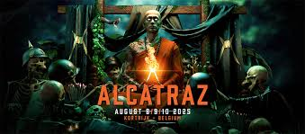

Persoonlijke informatie
- Buysens Dario
- 8550 Zwevegem
- 0497386088
- dario.buysens@student.vives.be

Ik heb verschillende hobbies en bezighouden buiten school.
Een van de zaken waar ik niet zonder zou kunnen is muziek. Ik luister bijna altijd naar muziek, jaarlijks ga ik ook naar festivals en optredens. Een festival dat ik bijvoorbeeld jaarlijks doe is Alcatraz. (er is een link beschikbaar als je op de afbeelding klikt)
Een paar van me favoriete bands die ik al live gezien heb zijn onder andere


Dit zijn voornamelijk de bands dat ik naar luister. Ik luister bijna altijd naar Metalmuziek maar luister ook af en toe naar andere muziek afhankelijk van de context waarin ik me begeef